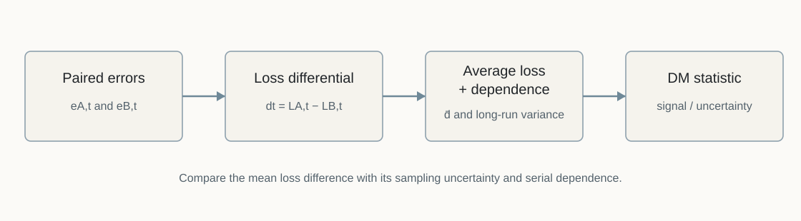
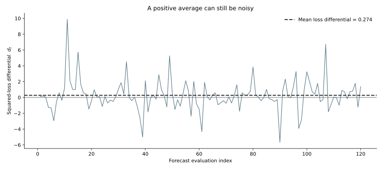

Diebold–Mariano Test
Is the apparent forecast advantage larger than sampling noise?
QM004 · Forecast Evaluation · Intermediate
Core idea. The Diebold–Mariano test asks whether the average loss difference between two forecast sequences is distinguishable from zero after accounting for sampling uncertainty.
Use it for. Comparing two forecasts of the same target, horizon, and evaluation sample under a pre-specified loss function.
It does not establish. Economic importance, universal superiority, conditional superiority in every regime, or valid inference when the dependence structure of the loss differential is handled incorrectly.
The Question
Suppose Model B has a lower RMSE than Model A over the same out-of-sample period.
Is that observed advantage large enough, relative to the variability of the paired forecast losses, to reject equal predictive accuracy?
A ranking by RMSE answers which model had lower average squared loss in the realized sample. It does not by itself tell us how much sampling uncertainty surrounds that difference. The Diebold–Mariano (DM) framework turns the comparison into a statistical test built from the sequence of paired loss differences (Diebold and Mariano 1995).
Why It Matters
Forecast comparisons are paired observations. At each forecast date, both methods face the same target realization. The natural comparison is therefore not two unrelated RMSEs, but the loss differential at each forecast date.
This matters for two reasons.
First, a visually meaningful RMSE difference can still be statistically weak when the loss differential is noisy or the evaluation sample is short.
Second, the loss differential can be serially dependent. Multi-step forecasts often overlap, and forecast errors or losses may also be persistent for other reasons. Treating the loss differences as independent when they are not can give misleading standard errors (Diebold and Mariano 1995; Harvey et al. 1997).
From Forecast Errors to a Test Statistic
Let the two forecast errors at evaluation date \(t\) be \(e_{A,t}\) and \(e_{B,t}\). Choose a loss function \(L(\cdot)\) before looking at the result. Define the loss differential as
\[ d_t=L(e_{A,t})-L(e_{B,t}). \]
Under this sign convention:
- \(d_t>0\) favors Model B;
- \(d_t<0\) favors Model A; and
- \(d_t=0\) means equal loss at that date.
For squared-error loss,
\[ d_t=e_{A,t}^{2}-e_{B,t}^{2}. \]
The null hypothesis of equal unconditional predictive accuracy is
\[ H_0: E[d_t]=0. \]
With \(P\) evaluated forecasts, let
\[ \bar d=\frac{1}{P}\sum_{t=1}^{P}d_t. \]
A DM statistic can be written as
\[ DM=\frac{\bar d}{\sqrt{\widehat{\Omega}_d/P}}, \]
where \(\widehat{\Omega}_d\) estimates the long-run variance of the loss differential. Under suitable regularity conditions, the statistic is asymptotically standard normal under the null (Diebold and Mariano 1995).

The Variance Estimate Is Part of the Test
If \(d_t\) is serially correlated, using only its ordinary sample variance understates or otherwise misstates uncertainty. A common horizon-based implementation estimates
\[ \widehat{\Omega}_d = \hat\gamma_0+2\sum_{k=1}^{h-1}\hat\gamma_k, \]
where \(h\) is the forecast horizon and \(\hat\gamma_k\) is the sample autocovariance of \(d_t\) at lag \(k\).
This truncation is natural in settings where an \(h\)-step forecast structure implies dependence through roughly \(h-1\) lags. It is not a universal bandwidth rule for every forecasting problem. If the observed loss differential has additional persistence, seasonality, or other dependence, the long-run variance estimator should be chosen for that setting rather than mechanically copied from the horizon (Diebold 2015).
The lag length, kernel, or other HAC choices should follow the forecast design and dependence structure. Trying several variance estimators and reporting the one that produces significance turns the inference procedure itself into a specification search.
The Loss Function Defines the Question
The DM test compares expected loss, so the loss function is not a cosmetic choice.
Squared error asks whether the forecasts differ in mean squared predictive loss. Absolute error asks a different question. For density or quantile forecasts, a scoring rule appropriate to that predictive object is needed.
A DM result should therefore be reported together with the loss function. Saying “Model B is significantly better” without specifying the loss is incomplete.
Small Samples and the Harvey–Leybourne–Newbold Adjustment
The original DM result is asymptotic. In relatively short forecast samples, the finite-sample distribution can differ materially from its asymptotic approximation.
For mean-squared-error comparisons, Harvey, Leybourne, and Newbold proposed a small-sample modification (Harvey et al. 1997). A commonly used scaling is
\[ DM_{HLN} = DM \sqrt{ \frac{P+1-2h+h(h-1)/P}{P} }. \]
The adjustment usually shrinks the absolute statistic when the evaluation sample is not large relative to the horizon. In the HLN modification used here, the adjusted statistic is compared with a Student \(t\) reference distribution with \(P-1\) degrees of freedom rather than with the standard normal distribution (Harvey et al. 1997). It should be viewed as a finite-sample correction for the specified comparison, not as a general cure for every source of misspecification or dependence.
Worked Illustration: Lower RMSE, but Weak Statistical Evidence
The example uses synthetic paired four-step forecast errors with overlapping dependence. It is designed to separate sample ranking from statistical distinguishability. The numerical size of the RMSE gap and p-value is not evidence about typical forecast-comparison outcomes in real data.
We generate \(P=120\) paired forecast errors for a four-step horizon. Both error sequences contain a shared overlapping component, so the squared-loss differential is serially dependent. Model B is designed to have somewhat lower idiosyncratic noise.
The realized comparison is:
| Quantity | Result |
|---|---|
| Model A RMSE | 1.207 |
| Model B RMSE | 1.087 |
| Model B vs. A RMSE | -9.9% |
| Mean squared-loss differential, \(\bar d\) | 0.274 |
| DM statistic, lags 0–3 | 1.350 |
| Two-sided asymptotic p-value | 0.177 |
| HLN-adjusted statistic | 1.310 |
| Two-sided HLN p-value | 0.193 |
Model B has the lower RMSE in this sample. But under the stated squared-error comparison and long-run variance estimate, the evidence is not strong enough to reject equal predictive accuracy at conventional significance levels.
That is not a contradiction. “Lower realized RMSE” and “statistically distinguishable expected loss” are different statements.

Hands-on Lab: Change the Loss and the Dependence Adjustment
The optional lab reproduces the baseline test and then lets you change two ingredients:
- the loss function: squared error or absolute error; and
- the autocovariance truncation lag used in the long-run variance estimate.
Run it yourself. Start with the lab guide. For a self-contained copy, use the complete lab bundle. Direct source: Python · R.
For example, compare:
python labs/python/qm004_hands_on.py --loss squared --lag 3
python labs/python/qm004_hands_on.py --loss squared --lag 0
python labs/python/qm004_hands_on.py --loss absolute --lag 3The point is not to search for a specification that produces a preferred p-value. The exercise shows that the statistical question depends on both the loss function and the uncertainty estimator.
Implementation Pattern
A transparent implementation starts from paired forecasts or forecast errors:
loss_a = loss(error_a)
loss_b = loss(error_b)
loss_diff = loss_a - loss_b
mean_diff = loss_diff.mean()
long_run_var = estimate_long_run_variance(loss_diff)
dm_stat = mean_diff / sqrt(long_run_var / n_forecasts)The code is schematic. In an applied implementation, state the sign convention, loss function, forecast horizon, variance estimator, alternative hypothesis, and any finite-sample adjustment explicitly.
How to Interpret the Result
With the sign convention used here, a positive DM statistic means Model B has lower average loss; a negative statistic means Model A has lower average loss.
A small two-sided p-value provides evidence against equal expected loss under the stated test design. It does not by itself tell you whether the difference is economically important.
Likewise, a large p-value does not prove that the forecasts are equally accurate. It means the observed loss difference is not statistically distinguishable from zero with the available sample and test specification.
Common Mistakes
1. Treating a lower RMSE as automatically significant
RMSE is a descriptive ranking. The DM test adds uncertainty around the paired loss difference. The two answers need not coincide.
2. Ignoring serial dependence in the loss differential
This is especially dangerous for overlapping multi-step forecasts. The relevant object is the dependence in \(d_t\), not just the dependence in the target series.
3. Reporting the p-value without the loss function
A DM test under squared loss and a DM test under absolute loss evaluate different expected-loss questions.
4. Interpreting non-rejection as proof of equality
Failure to reject \(H_0\) is not an equivalence test. Low power, short samples, or high loss variability can all produce large p-values.
5. Using a pairwise DM test as a many-model selection procedure
If many models are compared pairwise, multiplicity becomes a separate inferential problem. QM005 — Model Confidence Set addresses a set-based approach to model comparison.
6. Applying the standard pairwise setup mechanically to nested models
When one forecasting model nests another and parameters are estimated, the null distribution and mean-squared-error comparison can require specialized treatment. West develops inference that accounts for estimated parameters, and Clark–West propose an adjusted comparison for nested predictive models (West 1996; Clark and West 2007).
7. Using unconditional DM when the real question is regime-dependent performance
The standard DM null concerns the unconditional mean loss differential. If relative predictive performance may vary systematically with information available at the forecast origin, a conditional predictive ability framework can be more appropriate (Giacomini and White 2006).
A Practical Reporting Checklist
When reporting a DM comparison, state:
| Item | What to report |
|---|---|
| Forecast pair | Which two forecast sequences are compared? |
| Target and horizon | Are both forecasts for the same target and horizon? |
| Evaluation sample | How many paired forecasts are used? |
| Loss | Squared error, absolute error, or another scoring rule? |
| Sign convention | Which sign of \(d_t\) favors which forecast? |
| Dependence adjustment | How is long-run variance estimated? |
| Small-sample adjustment | Is HLN or another correction used? |
| Alternative | Two-sided or pre-specified directional test? |
| Effect size | What is the actual difference in average loss or RMSE? |
| Multiplicity | Are many forecast pairs being tested? |
The p-value should accompany the forecast-loss difference, not replace it.
When Not to Use It
The basic pairwise DM setup is not the right tool when:
- the main question concerns many models simultaneously rather than one pre-specified pair;
- the loss function does not match the predictive object being evaluated;
- the two forecast sequences do not refer to the same target, horizon, and evaluation dates;
- the long-run variance cannot be estimated credibly with the available sample;
- the comparison is fundamentally about nested estimated models requiring specialized inference; or
- the scientific question is conditional predictive ability rather than equality of unconditional mean loss.
Used in SlackQuant Research
Beyond Average Accuracy: Statistical Distinguishability and Temporal Concentration in Data-Rich Macroeconomic Forecasting uses pairwise predictive-accuracy inference alongside multiplicity control and set-based comparison. QM004 isolates the pairwise logic: how a sequence of forecast-loss differences is converted into evidence about equal predictive accuracy, and why the loss function, dependence adjustment, and finite-sample treatment matter.
Reproducibility
The accompanying materials include paired synthetic forecast errors, code, figures, and a hands-on lab in Python and R. The full example reproduces both the DM and HLN results reported above; the lab focuses on the unadjusted DM calculation under alternative loss functions and autocovariance truncation lags.